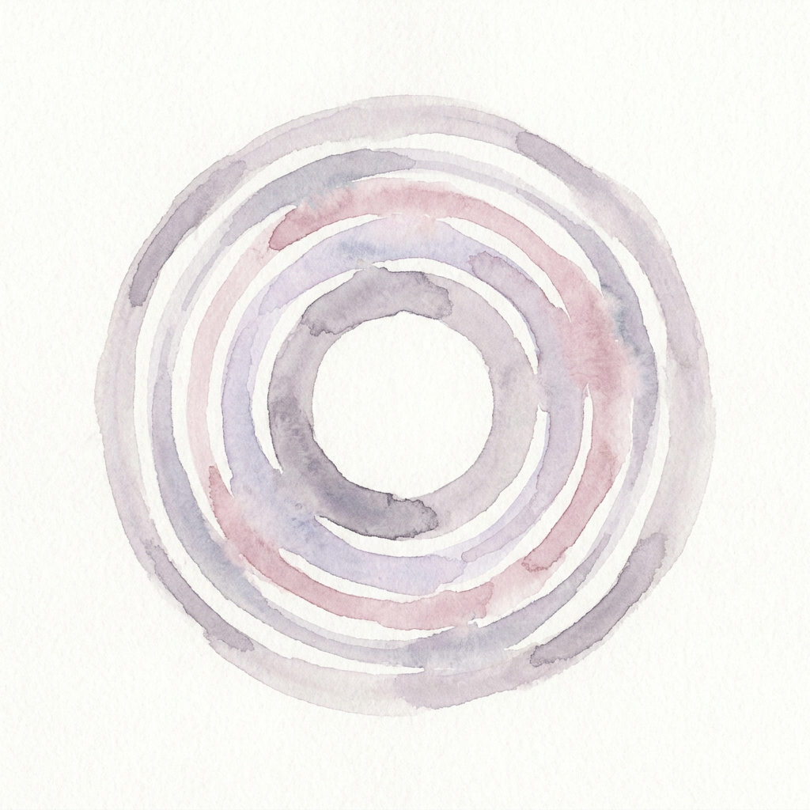
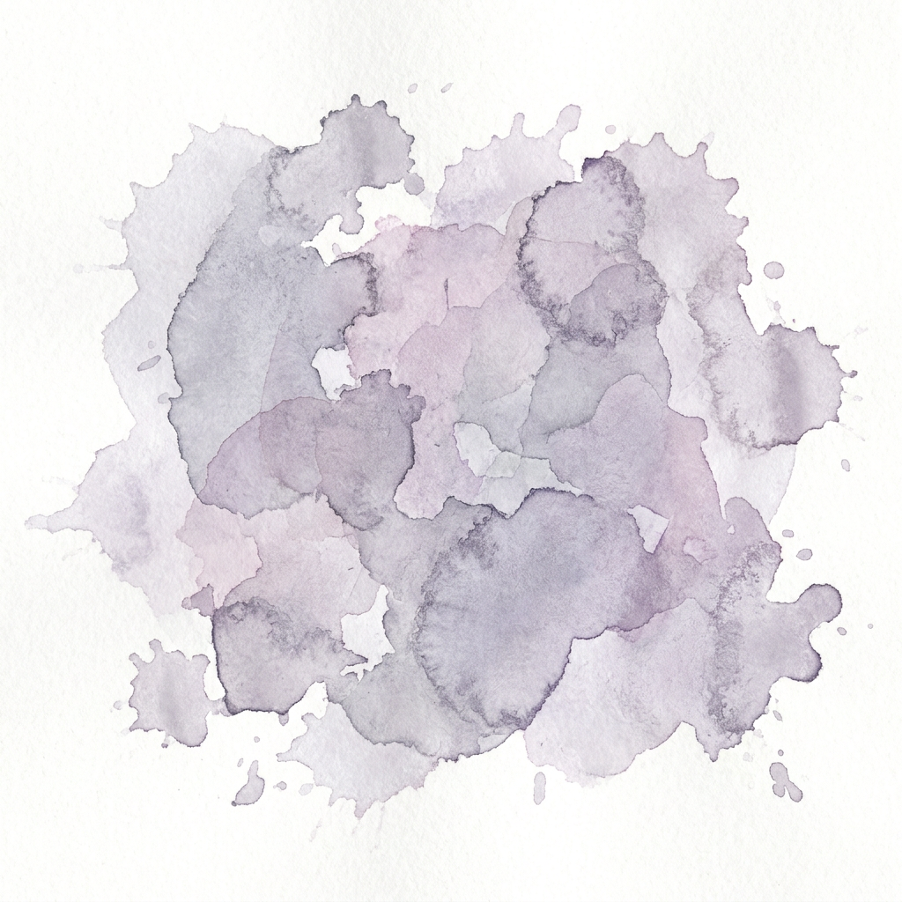

Bienvenue dans mon monde
✦ 点击下方文字，去你想去的地方 · Click any label to explore ✦


你好，我是古天悦
南大出版专业硕士在读，写得了文案、排得了版面、办得了活动——欢迎随便逛逛。

关于我
About Me本科法语，硕士出版——一半是文字的严谨，一半是画面的敏感。运营让我把事情做成，美术让我把事情做好看。
把文字排成诗，把日子过成画
运营 · 让事情发生Operations
内容运营 + 活动策划 + 用户研究，擅长从 0 到 1。
- 小红书账号 0 → 1 建立与内容打造（合肥有始网络）
- 公众号日常运营与营销文案（佛山槑槑文化）
- 泛非电影节社交媒体内容运营（联合国志愿者）
- 玩家访谈与用户反馈甄别（网易游戏）
美术 · 让事情好看Art & Design
出版专业的版式功底，落在排版、文创与实体书上。
- 商品推文版图设计与营销物料（Photoshop）
- 实体书《文匠观察笔记》全流程与装帧设计
- 文创设计与制作（选题、设计、打样）
- 播客《编辑创造》录制与剪辑（剪映）
精选作品
Selected Works 更多装裱中 · More coming小红书账号 0 → 1
账户建立与内容打造全流程，完成冷启动与内容体系搭建。（合肥有始网络）
实体书《文匠观察笔记》
选题、组稿、审稿、印刷全流程，负责文创设计与制作。
国家级大创「偕她书」
核心成员，国家级立项；论文一篇、公众号文章 7 篇、180+ 页访谈录。
泛非电影节线上营销
以联合国志愿者身份参与线上宣传，负责社交媒体内容运营。
商品推文版图设计
公众号推文版面设计、营销文案写作与商品介绍翻译。（佛山槑槑文化）
编舟计 · 播客《编辑创造》
责任编辑：文稿撰写、整理与审阅；播客录制与剪辑。
我的经历
My Journey法语本科B.A. in French
南京大学外国语学院高级法语、法国文学与翻译；获 2024–2025 年度文诚奖学金。
文案 · 活动策划 · 营销实习生Intern
佛山市槑槑文化传播有限公司公众号运营、推文版图设计与营销文案；与区文化局合作策划并落地线上游学路线。
小红书运营实习生Xiaohongshu Ops Intern
合肥有始网络科技有限公司负责小红书账户从 0 到 1 的建立与内容打造。
泛非电影节线上宣传志愿者UN Volunteer
联合国志愿者参与线上宣传活动，负责社交媒体平台内容运营。
出版硕士在读 × 编舟计责任编辑M.A. Candidate
南京大学信息管理学院主修出版物编辑与制作、期刊出版与策划；「编舟计」责任编辑，播客录制剪辑。
网易游戏玩家访谈兼职Player Interview
网易游戏负责玩家电访，收集与甄别玩家意见反馈，沉淀真实用户视角。
游戏经历
Gaming Experience玩游戏，也研究游戏——长期的玩家视角，让我在玩家访谈与社群沟通时，能真正听懂玩家在说什么。
燕云十六声 · 百业社主Guild Leader
从开服玩起，摄影党 / 剧情党 / 探索党；作为百业（玩家社团）社主，组织社员参与多人玩法，平时也关注游戏社群里的玩家意见与动态。
AI × 游戏创作Game Making
最近在尝试用 AI 工具自己创作网页解谜游戏，从玩家变成创作者。